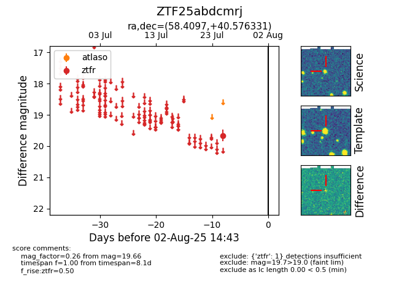

Target ZTF25abdcmrj at 2025-08-02 14:43, see:
FINK: fink-portal.org/ZTF25abdcmrj
Lasair: lasair-ztf.lsst.ac.uk/objects/ZTF25abdcmrj
ALeRCE: alerce.online/object/ZTF25abdcmrj
alt names
ZTF25abdcmrj (ztf,fink)
coordinates:
equatorial (ra, dec) = (58.4097,+40.57633)
galactic (l, b) = (156.3597,-10.18223)
photometry
last ztfr=19.66
1 ztfr detections
